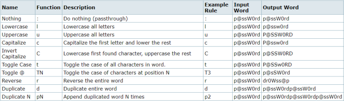

Rule-based attack
site:
https://hashcat.net/wiki/doku.php?id=rule_based_attackWith rules a user can specify certain pattern or behavior when processing a wordlist
Each rule can be considered a mutation of a single wordlist position, that means hashcat will use the original word of the dictionary and to it will apply the rule so it will change to a similar different word
This means that for example use 7 different rules will make hashcat use a single word 8 time(the original word+7 mutaded by each rule)
Hascat has preinstalled a lot of rules preinstalled. Usually we can find them in the directory: /usr/share/hashcat/rules/
One of the most useful rulesets is best64.rule that we can find bot in John and Hashcat in the directories:
/usr/share/hashcat/rules/best64.rule
/usr/share/john/rules/best64.rule
With this example we have found more match compared to a direct dictionary attack
hashcat64.exe -m 0 -a 0 -D 1 example0.hash example.dict -r rules/best64.rule